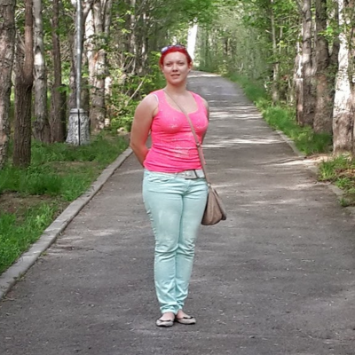

Привет, меня зовут Екатерина. Мне 28 лет. Веду не слишком активный образ жизни и страдаю от лишнего веса
(рост 170 вес 90 кг)
Решилась пропить курс Fortunella по рекомендации своей двоюродной
сестры. Я рассчитываю на месяц использования, потом посмотрю по конечным результатам. Для лучшего эффекта
проделала следующее:
• Изменила рацион питания, налегать буду на вареную рыбу, нежирное мясо, фрукты, овощи. Если захочу
сладкого, то скушаю мюсли или сухофрукты в небольших количествах;
• Начну нормально пить воду. Использовать буду чистую питьевую воду, не заменяя ее кофе, газированными
напитками;
• Стану умеренно заниматься спортом.
Контрольные измерения и свое самочувствие опишу в течение следующего месяца, надеюсь все получится. Кстати,
упаковка прикольная, Fortunella похож на спортивные сжиросжигатели, только состав гораздо полезнее
и натуральнее.
3249
Принимаю в течение 4 дней Fortunella. Казалось бы срок небольшой, но уже вижу заметные изменения в
своем организме. Я скинула 3 килограмма за 4 дня и вижу, как это произошло без особых титанических усилий,
адского фитнеса и голодания. В первые дни было сложно отказаться от любимой еды, но постепенно плавно перешла
на ПП. капли пью по инструкции, не повышая и не понижая дозировку БАДа. По самочувствию все
ок. В отличие от других препаратов и средств не ощущаю головокружений, нет отеков. Уже чуть визуально меньше
бока, живот, уходят постепенно отеки.
1280
Корю себя за то, что расслабилась на день рождении подруги и позволила себе поесть сытный мясной салат,
тарталетки с семгой и немного сырокопченой колбасы. Думала сразу прибавлю кило-два, но на весах результат
стабильный и радующий глаз. Я похудела с Fortunella еще на 4 килограмма. Ура, это реально классно.
Теперь я вешу 83 кило и мне стало легче ходить. Я даже попробовала небольшие утренние пробежки и подъемы по
лестнице на 8 этаж. Было тяжеловато, но справилась. Не отвисает кожа, заметно меньше бедра, окружность талии,
появилась шея без лишних подбородков. Продолжаю прием дальше.
5482
На этот раз я не давала себе поблажек в плане приема пищи, даже на свое день рождения отказавшись от угощений.
Все также пью капли Fortunella. Самочувствие отличное. Более того, появилась какая-то легкость и
уверенность в себе. В этот раз результат еще более классный. Я скинула еще 5 килограмм вместе с
ним. Удивительно, но я даже и не думала, что когда-нибудь буду весить 78 килограммов.
Сколько помню всегда минимум 90-93 килограмма и то на жесточайших диетах и голодании, после чего вес
предательски возвращался снова. Иногда я делаю разгрузочные дни и даже могу позволить себе шоколад или мои
любимые бананы.

4256
Я добилась своего. Весы меня радуют своими низкими цифрами. Ура, ушло еще 4 килограмма! После последнего
контрольного измерения прошло два месяца. Начало мая и я скинула целых 16 килограмм вместе с BURN
MT и вешу 74 кг. Сказать, что я в шоке – это ничего не сказать. Смотрю на свои фотографии старые и
просто удивляюсь я ли это на фото. Что сказать об изменениях?
Во-первых, гораздо стали меньше объемы. У меня появилась тонкая талия, стройные ноги, похудели
сильно руки и бедра. Не осталось следа от второго подбородка и скорректировался овал лица, став четким,
как будто я сделала контурную подтяжку, хотя это не так. Полностью сменила свой гардероб, избавившись от
старых безразмерных платьев, блузок и юбок. Более того за это время существенно улучшилось мое общее
самочувствие. Я стала меньше простывать, лучше выглядят волосы (более упругие, блестящие), не ломаются ногти,
что было моей бедой. На данный момент вес меня устраивает полностью)
6062


Комментарии
Отправить
Реально помогающее средство для контроля веса. Мне купила Fortunella мама, конечно обиделась на ее намек, думаю, что это за развод и разве я жирная? Взвесилась и вешу 85 кило. Посмотрела на себя в зеркало в нижнем белье и отметила свисающий животик, целлюлит и вываливающиеся бока. У меня рост 175 сантиметров и лишний вес заметен все же. принимала капли два месяца и как итог минус 12 кило. Выгляжу супер!
ОтветитьЮлия Ну кому как. Мне лично не помогло, принимала неделю, бросила. Ушло два килограмма и все. Где супер-эффект?
ОтветитьМодератор Валерий Здравствуйте. Спасибо за ваше сообщение. Скажите, как вы питались во время приема Fortunella?
ОтветитьЮлия Питалась, как и обычно. Я могу поесть и после 9 вечера, люблю сладкое, копченую рыбку, иногда балую себя пивом.
ОтветитьМодератор Валерий Вам нужно скорректировать систему питания, исключив мучное, соленое, жареное, газированные и алкогольные напитки. Включите в рацион отварную нежирную рыбу, мясо, овощи, фрукты и вы заметите результат.
ОтветитьЮлия Попробовала сделать как вы говорили и изменила питание. Процесс прошел гораздо быстрее. Спасибо)
ОтветитьАлевтина А мне понравился эффект от Fortunella. Просто если вы не прекращаете есть постоянно, не изменяете свои пищевые привычки и не занимаетесь спортом, то естественно вес на месте встанет. Мне с ним удалось похудеть на 10 килограммов. При этом принимала до него другой БАД от которого была куча побочек. Я мучалась с аллергией, голова кружилась, вес уходил ненадолго, и потом набирала еще больше, а тут просто все отлично!
ОтветитьВалентина Скажите какой состав капель? Что входит в него, какие полезные свойства?
ОтветитьМодератор Валерий Здравствуйте. Спасибо за ваше сообщение. В состав капель Fortunella входят только проверенные и клинически протестированные компоненты, такие как: Форсколин или лабдановый дитерпеноид. Один из главных компонентов, который заставляет ускоренно расщепляться жирам, выводя их из организма; - Пиколинат хрома. Важный минеральный компонент, поддерживающий гормональный и метаболический дисбаланс;
Ответить- Экстракт кайенского перца. Он регулирует контроль аппетита и способствует сжиганию жировой ткани;
- L-карнитин, являющийся микроэлементом, обладающим регенерирующими и омолаживающими свойствами;
- Экстракт васаби, отмечающийся отменными иммуностимулирующими свойствами.
Средство можно применять тем, кто не только хочет эффективно похудеть, но и переносит постоянные физические нагрузки. Чего можно добиться в результате приема Fortunella? - Сжигание лишних калорий
- Уменьшение массы тела
- Нормализация метаболических и эндокринных процессов в организме
- Увеличение и стабилизация нормальной физиологической массы тела
- Вывод лишней жидкости, токсинов и шлаков из вашего организма.
Помимо явного жиросжигающего эффекта Fortunella обладает противоотечными, фитонцидными, регенерирующими свойствами.
Валентина А вы не уверены, что состав безопасный? Мало ли что в рекламе обещают? Я после Фуросемида чувствовала себя крайне плохо.
ОтветитьМодератор Валерий Здравствуйте. Спасибо за ваше сообщение. Наше средство Fortunella содержит в себе только природные биологически активные компоненты, которые подобраны таким образом, что они не оказывают негативного влияния на состояние здоровья. Мы не рекомендуем применять такие препараты, как Фуросемид без назначения лечащего врача. В первую очередь он нарушает реабсорбцию ионов хлора и натрия, просто выводя воду и обезвоживая ваш организм. Попробуйте приобрести Fortunella и поделитесь результатом.
ОтветитьВалентина Вы оказались правы. Я все-таки купила Fortunella и пропила курс, похудела на 7 килограммов, отеки ушли прекрасно. Спасибо, буду худеть дальше!
Лидия Я довольна, что приобрела Fortunella. Эти капли стали для меня настоящим спасением. Просто и без особо труда скинула 15 килограммов. Девочки – это чудо. Такой красивой я не была уже лет 10. Муж смотрит с обожанием, на работе все в шоке с перемен. Могу наконец-то позволить себе одежду, которую до этого из-за лишнего веса просто носить стеснялась. Все супер
ОтветитьСвета Тоже сталкивалась с проблемами лишнего веса еще со школы, когда меня вечно сопровождали насмешки. Родители говорили, что я и так красивая и очаровательная. Поступила в институт и не было даже элементарных ухаживаний от парней, ведь я уступала своим стройным и эффектным подругам. Так я и дожила до 25 лет, постоянно поедая сладости, пока подруга заодно не предложила попробовать худеть вместе с Fortunella.
ОтветитьВы знаете, это невероятное, классное и необычное чувство, когда ты худеешь, преображаешься, начинаешь меняться как внутренне, так и внешне. Я через два месяца приема Fortunella не стала узнавать себя в зеркале, я стала просто другой. Уверенной, красивой, стройной. Спасибо!
Модератор Валерий Здравствуйте. Спасибо за ваше сообщение. Мы рады, что Fortunella помог вам!
Ответить